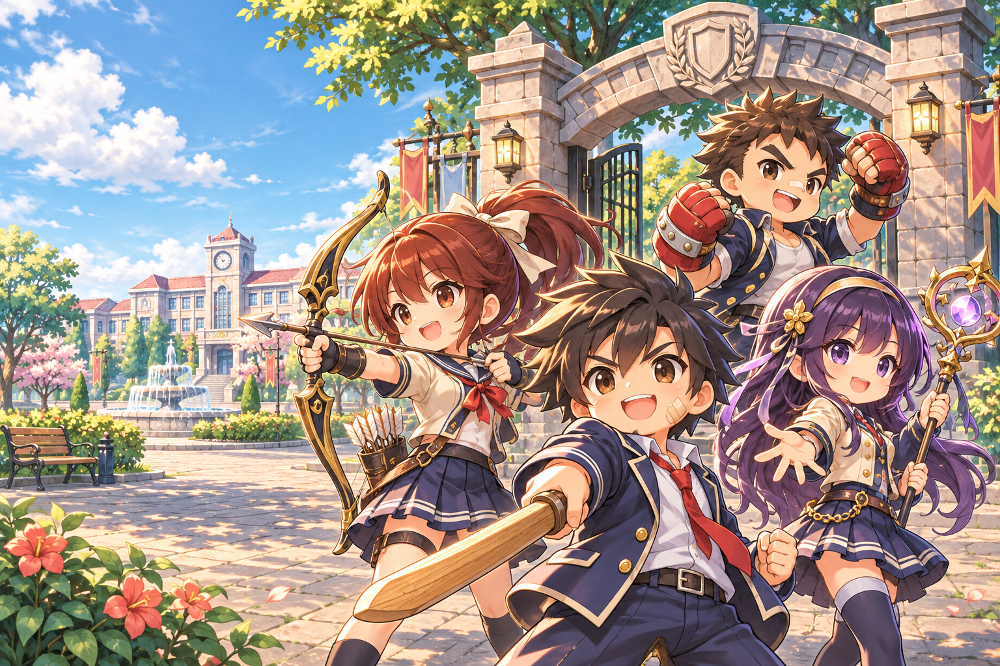
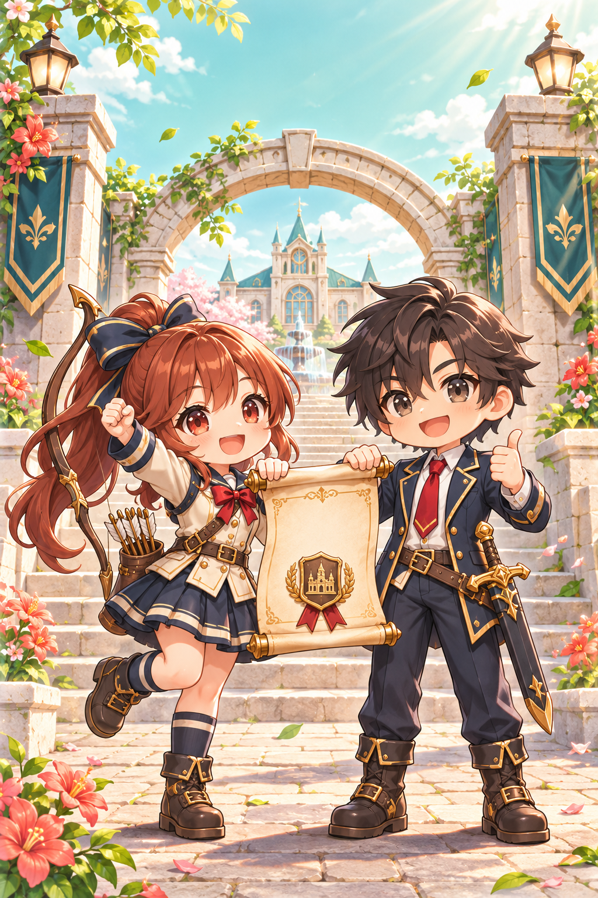

首次啟動會檢查必要元件。缺少時，請依啟動器與 Windows 提示完成安裝。

你的校園冒險，從這裡開始↓
CAMPUS GATEWAY
準備好，回到我們的校園。
下載、註冊、帳號管理，一次找到。
READY FOR YOUR NEXT ADVENTURE
更新完成，就出發。
正在取得最新更新資訊…
啟動器會下載並驗證更新。首次使用請先準備完整客戶端，再將啟動器放入遊戲資料夾。

CAMPUS GATEWAY
下載、註冊、帳號管理，一次找到。
首次啟動會檢查必要元件。缺少時，請依啟動器與 Windows 提示完成安裝。


READY FOR YOUR NEXT ADVENTURE
正在取得最新更新資訊…
啟動器會下載並驗證更新。首次使用請先準備完整客戶端，再將啟動器放入遊戲資料夾。